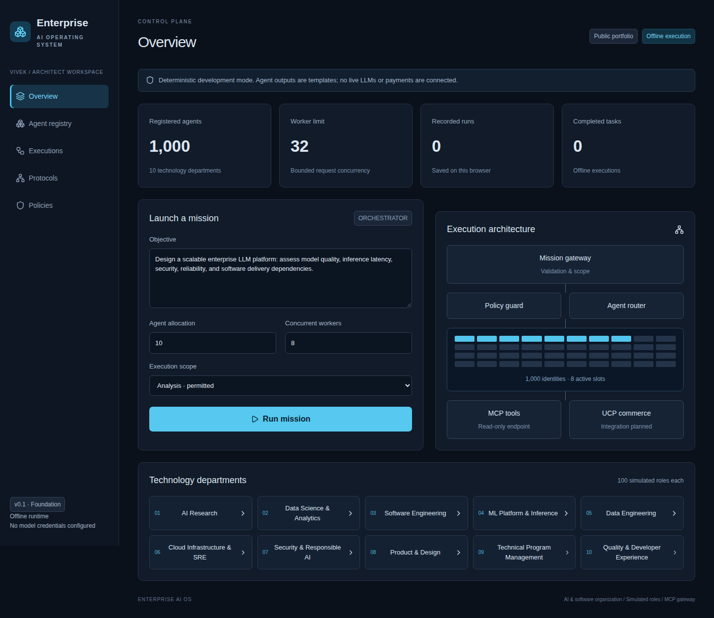
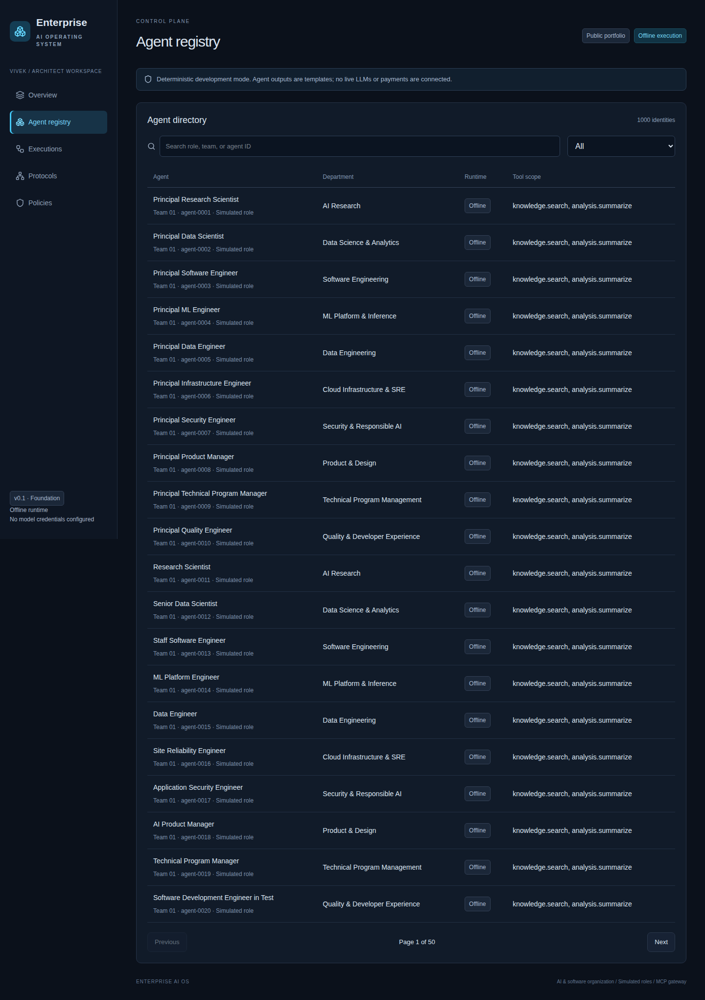

Enterprise AI Operating System
A control plane for an AI and software organization: simulated specialist roles, bounded task scheduling and inspectable execution traces. Live LLMs and distributed agents are not connected yet.
The working interface


Screenshots captured from the public dashboard. Offline outputs are templates.
Evidence and roadmap
| Capability | Today | Next |
|---|---|---|
| Execution | 1,000 offline tasks verified | 5–10 genuine model-backed roles |
| Tools | Minimal read-only MCP endpoint | Official SDK, sandbox and approvals |
| Storage | Latest 20 browser-local runs | Tenant-scoped durable workflow events |
| Protocols | UCP/A2A not implemented | Optional merchant sandbox and delegation |
Product value to validate
Pilot targets: 25% faster reviewed task completion, 30% less coordination effort and 95% required trace coverage. These are hypotheses, not measured benefits.
An illustrative 50-user scenario yields 125 hours/month of released capacity at a 25% effort reduction. At $50/hour and assumed recurring costs of $2,100/month, net capacity value is $4,150/month. Read the product case for assumptions and sensitivity.
Sixteen-week delivery plan
Baseline delivery: weeks 1–16, with separate contingency in weeks 17–18. Phases cover role contracts, real agents, durable execution, security, evaluation, pilot, scale validation and release readiness. The plan assumes a dedicated engineering team.
Framework direction
React/TypeScript UI; evaluate LangGraph for workflows, Temporal for durable execution, PostgreSQL for state, official MCP SDKs for tool access and OpenTelemetry for traces. Python/FastAPI can serve ML workloads. These are planned directions, not implemented integrations.